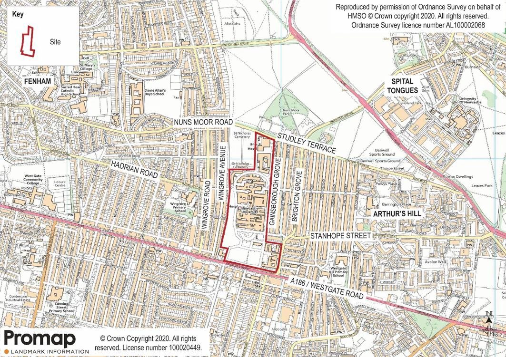
Sustainable Drainage for New Developments
Site hydrology · Arthur’s Hill & Newcastle Helix · Interactive engineering exploration
One familiar site. A new engineering question.
You already know this development site from other disciplines. Today we examine how it behaves when it rains—and how to manage the resulting water sustainably.
Identify a defensible surface-water strategy at master-plan stage, before detailed hydraulic design.
Rainfall, runoff, and design storms
Flow pathways, storage, and conveyance
Infiltration, reuse, SuDS, and environmental consequences
What does a good solution need to achieve?
What are today's surface-water and groundwater conditions?
Who or what is affected—buildings, roads, ecosystems, soil, and neighbouring sites?
How will the development avoid, reduce, or manage its impacts?
SuDS belongs in the development design
The September 2026 NPPF Chapter 18, policy F8, addresses sustainable drainage, flow rates, runoff volumes, and wider benefits. The 2025 National SuDS Standards provide the design framework.
Open current NPPF ↗These are planning principles, not a substitute for site-specific planning, engineering, and regulatory assessment.
Runoff is a question of volume and timing.
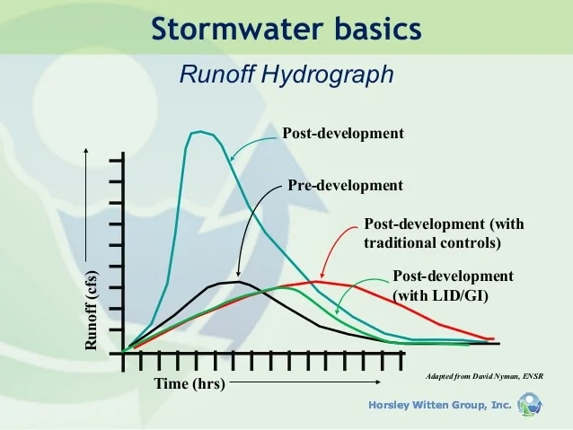
Read the hydrograph
A development can increase the runoff peak and alter the timing and duration of discharge. Sustainable drainage aims to change those dynamics.
Arthur’s Hill, Newcastle upon Tyne
Site context
Westgate Road lies to the south, Studley Terrace to the north, and residential areas to the east and west.
Approximate National Grid Reference: NZ 22844 64755.
Where should we expect the highest surface-water risk?
Place one pin on the familiar Arthur's Hill map to predict where water may accumulate. We'll compare the responses with the CityCAT model afterwards.
Where will the water move?
Compare your predictions with the contours and the CityCAT model output. The source figures cover different extents; treat them as separate views, not precisely registered overlays.
Assess topography, land use, buildings, drainage capacity, and possible receptors.
What does the model reveal?
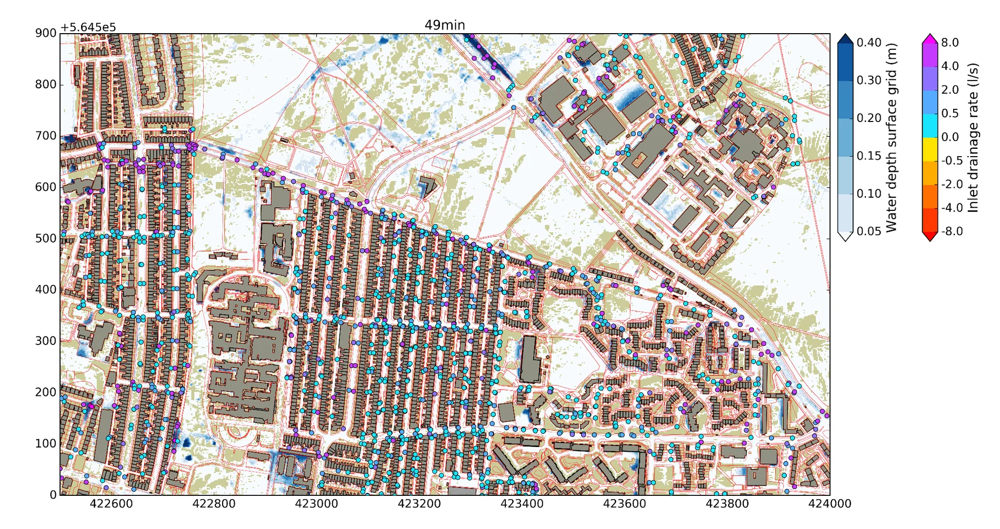
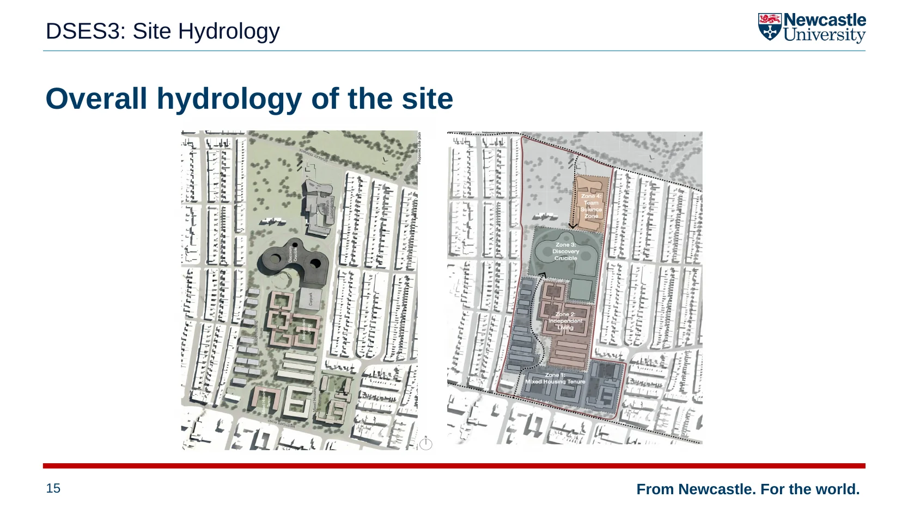
Where can the water go?
Groundwater recharge if soils, groundwater, contamination, and adjacent structures allow it.
Attenuation basins, ponds, swales, tanks, and other storage infrastructure.
Move water through suitable channels, pipes, or landscape features to appropriate destinations.
Where appropriate, capture rainwater for non-potable uses such as irrigation or toilet flushing.
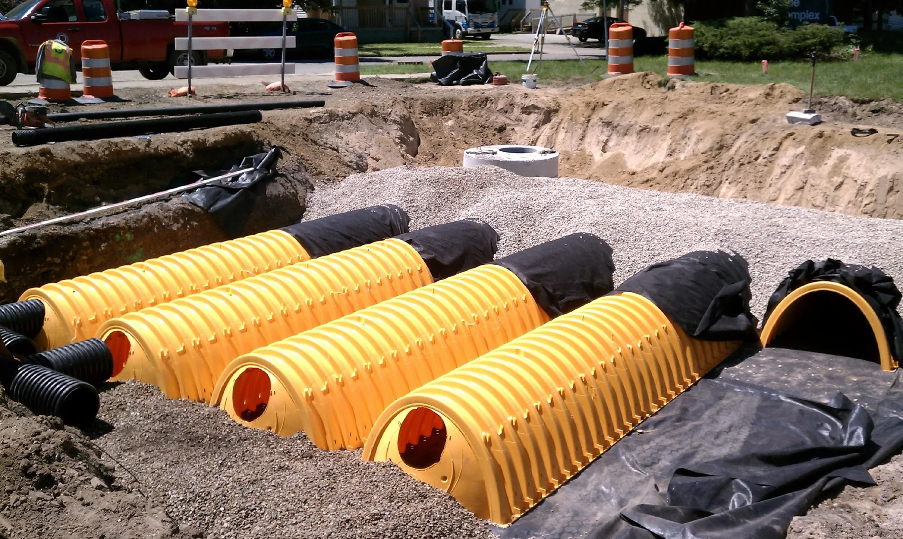
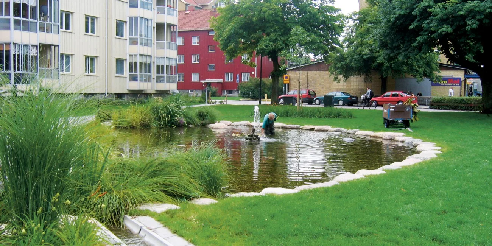
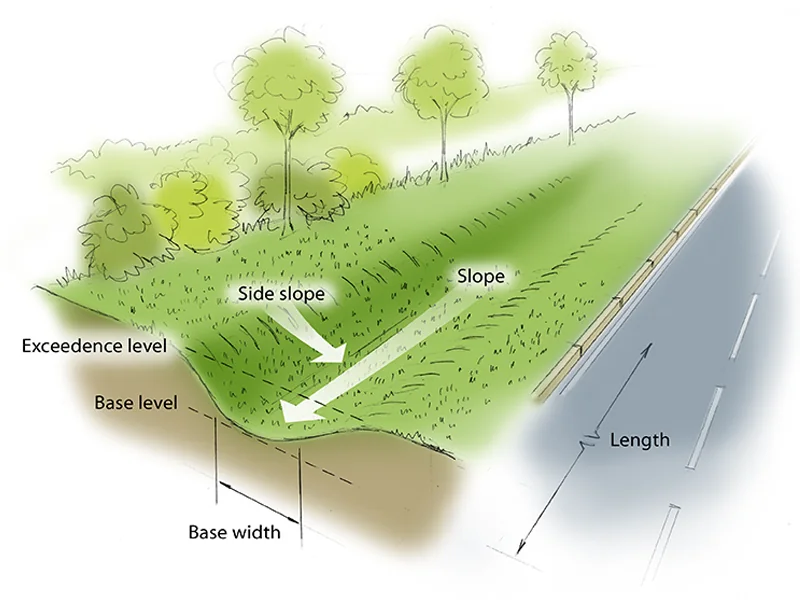
Can water really infiltrate here?
Use current BGS tools
The former Geology of Britain Viewer showed geological layers and borehole scans. That legacy viewer was retired in August 2022. BGS GeoIndex is the current professional viewer for geological layers and borehole records.
Three questions before proposing infiltration
Which formations and superficial deposits occur nearby?
What does the available ground investigation suggest, and how representative is it?
Soils, contamination, water table, stability, and neighbouring assets
Water is a resource—and carries pollutants.

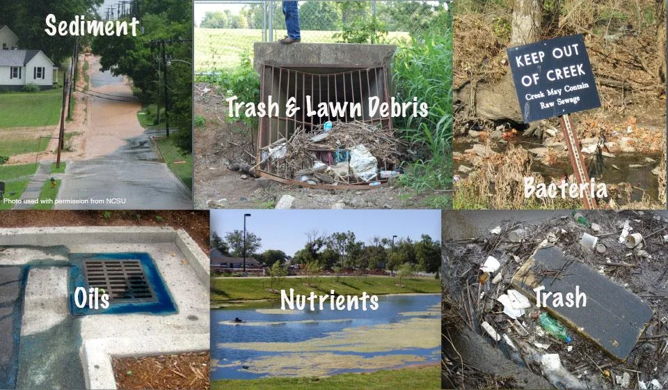
Rainwater harvesting, detention, and conveyance can all be designed for wider environmental benefits. Water quality depends on source, land use, and intended use.
Ask before proposing reuse
Newcastle Helix: what was built?
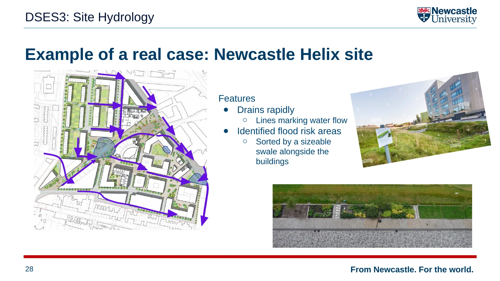
Look for the evidence of drainage in the landscape
This case illustrates surface-water conveyance and a substantial swale alongside buildings.
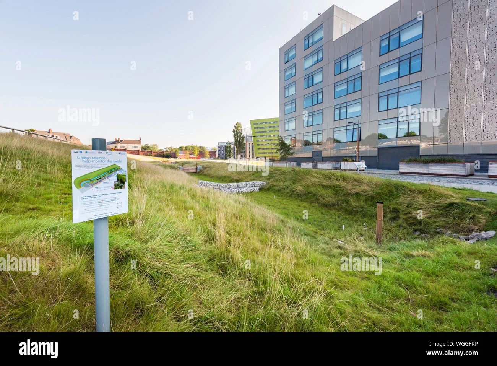
Video and Google Earth view from the course materials. These open in a new tab and need internet access.
Will the drainage still work in a changing climate?
How should the rainfall allowance be selected?
Use current Environment Agency peak rainfall climate-change allowances for site-scale drainage. Appropriate values depend on the management catchment, lifetime, epoch, and assessment scenario.
Check EA guidance ↗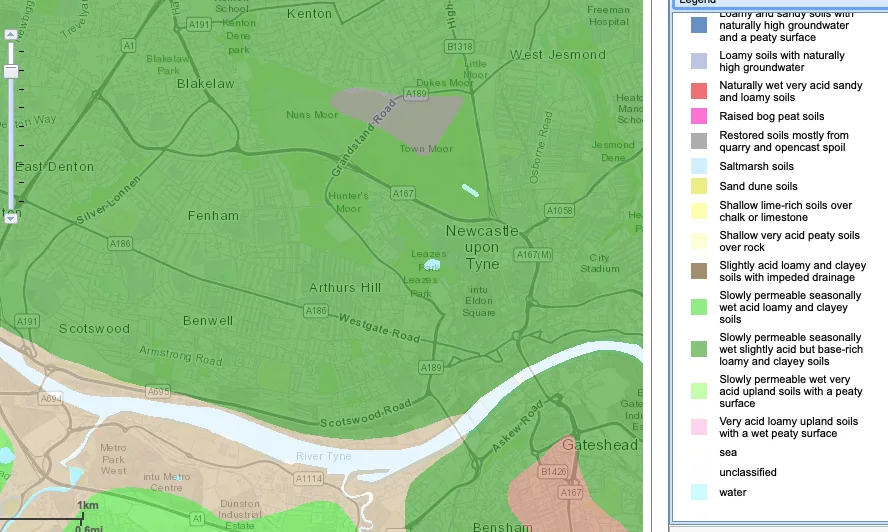
The shape of a storm matters.
The example design-storm dataset reports approximately 49.03 mm over one hour. The plotted ordinates are reproduced as provided.
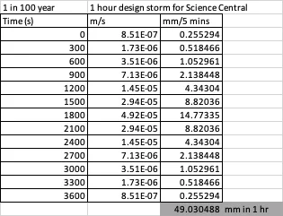
How much storage might we need?
Start with the original rounded 12 ha × 50 mm = 6,000 m³ case. Move the controls. What happens to land take when you change the assumptions?
25% impervious, 75% poor soils; assumes effectively all event rainfall becomes runoff.
Where would the storage actually fit?
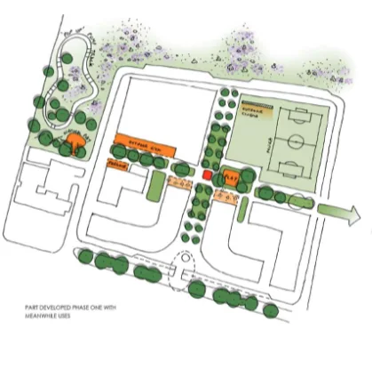
Sketch a conceptual drainage strategy
Working in pairs, propose a spatial strategy using the site characteristics and the sizing experiment.
What does 6,000 m³ mean in practice?
Around one million flushes
6,000 m³ of water ÷ 0.006 m³ per flush = 1,000,000 flush equivalents.
Consider tank size, rainfall and demand timing, water quality, treatment, and long-term operation.
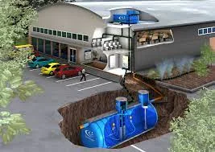
Which option should be investigated first for this development?
Choose an initial strategy—not the final design. You must justify it using available evidence and explain what you would verify next.
Discussion options
Key takeaways
Study contours, gradients, soils, receiving waters, and infrastructure.
Estimate volumes and identify the assumptions behind the calculations.
Combine source control, infiltration where suitable, storage, conveyance, and reuse.
Protect environmental receptors, consider climate change and maintenance, and seek additional evidence.
Examples: infiltration test, allowable discharge rate, high-resolution site levels, drainage connections, groundwater data, or downstream constraints.
Explore the evidence and guidance.
Links are external and require an internet connection. The lecture itself, its images, calculator, and navigation work offline.
This educational website uses course materials and figures for the Arthur’s Hill and Newcastle Helix case studies. All simplified calculations are illustrative. Some figures and links originate from third-party sources; permissions should be reviewed before public redistribution.